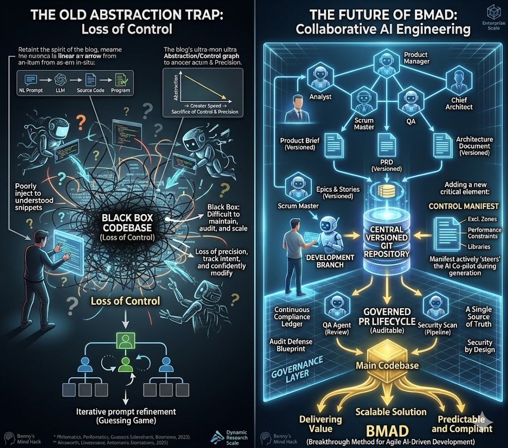

🔄 From Chaos to Control: The BMAD Evolution

🔍 Click to enlarge
This illustration depicts the evolution from the "Old Abstraction Trap" to a futuristic, governed approach known as the BMAD Method.
On the left, the visualization shows the Loss of Control inherent in unstructured AI development, where high-level prompts enter a "Black Box" that results in tangled, high-risk codebases characterized by technical debt and poor traceability. This chaotic environment forces developers into an iterative "guessing game" of prompt refinement, sacrificing precision and accountability for the sake of speed.
The right side showcases "The Future of BMAD," a structured and collaborative AI engineering framework designed for enterprise-grade scalability. This futuristic model utilizes a BMAD Agentic Team—comprising roles like Analysts, Architects, and Scrum Masters—to generate versioned artifacts such as Product Briefs and Architecture Documents.
Central to this transition is the "Control Manifest," which allows human developers to actively steer AI co-pilots through a governed pull request lifecycle. This ensures that the final codebase is not only scalable and predictable but also serves as an auditable "continuous compliance ledger" for the organization.
Enterprise & Agent Autocomplete
ROI Model Demonstration
Run the predictive ROI model to analyze production margins based on current wire prices.
BMAD Orchestrator (Hermes)
> Hermes Agent initialized.
> Monitoring enterprise data sources...